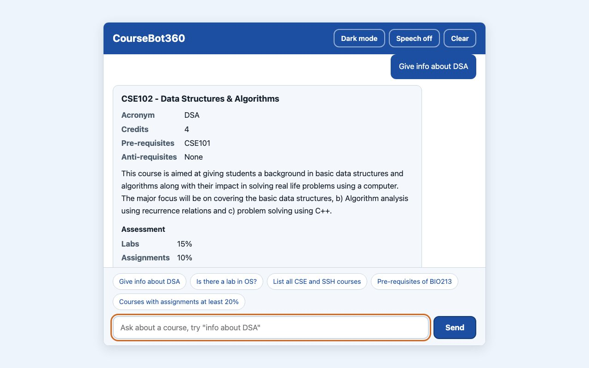
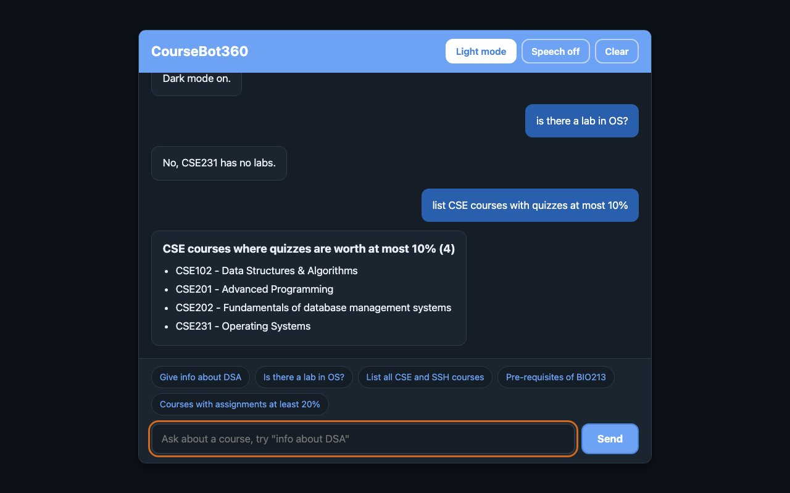

- 1 Projects
- 2 Details
- 3 Code on GitHub
Open source | JavaScript | Live on GitHub Pages
CourseBot360
A chat page that answers questions about 31 IIIT Delhi courses: what a course covers, how it is graded, whether it has a lab, what it needs first and what it unlocks. It runs in the browser from one JSON file, with no server and no language model.
- JavaScript
- Vite
- vitest
- jsdom
- ESLint
- GitHub Actions
- GitHub Pages
- 108
- tests in four suites
- 31
- courses across seven departments
- 15
- intents, plus a fallback for anything else
- ~4 ms
- for 1,200 replies in plain Node
Overview
What it does
You type a question the way a student would ask it. "Is there a lab in OS?" "What are the pre-requisites of BIO213?" "List CSE courses with quizzes at most 10%." CourseBot360 works out what you are asking, finds the course or courses, and answers in the chat with a short reply and, where it helps, a table or a list.
There is no language model behind it, and that was a choice. A static site cannot hold an API key without handing it to every visitor, and for 31 fixed courses a parser is faster, free, and cannot invent a prerequisite that does not exist. When a prerequisite is missing from the data, the answer says "(not in this catalogue)" instead of guessing.
- Type
- Static web app
- Stack
- Vanilla JavaScript, Vite 5, vitest 2, ESLint 9
- Data
- 31 courses in
public/data/courses.json - Tests
- 108 across four suites
- Deploy
- GitHub Actions to GitHub Pages
- Licence
- MIT
How it works
From a typed question to a rendered answer
Load the catalogue
loadCatalogue()fetches the course file once. TheCatalogueconstructor upper-cases codes and acronyms, tidies the prerequisite lists and builds lookup maps by code and by acronym.src/engine/catalogue.js
Capture the question
handle()trims the typed text or the suggestion chip, posts it as your message and callsrespond().src/main.js
Normalise
parse()trims the text, and course codes lose their spaces and are upper-cased, so "cse 101" becomes CSE101.src/engine/intents.js
Detect the intent
Commands such as help, clear and theme come first, then listing words like "list" or "which courses", then course questions in a fixed priority order: unlocks, anti-requisites, prerequisites, info, description, credits, components and assessment. Anything else about a course gets an overview.
parse() in src/engine/intents.js
Match the course and the filters
findCourseToken()tries a real course code first, then each word of two to six letters as an acronym, longest first.findComponent(),findDepartments()andfindComparison()fill in the rest, such as "quizzes" and "at most 10%".src/engine/intents.js
Query the catalogue
Methods such as
inDepartment,unlockedBy,byComponentWeightandwithCreditsdo the lookups.src/engine/catalogue.js
Build the answer as data
respond()returns{ text, blocks }, where each block is a heading, paragraph, list, facts table or link. No HTML is produced anywhere in the engine.src/engine/respond.js
Render it safely
renderMessage()builds every node withcreateElementandtextContent, for your text and for the answer alike. The same text goes to a polite live region for screen readers and an optional read-aloud mode, which is off by default.src/ui/render.js, src/ui/speech.js
Engineering decisions
Why it is built this way
The engine never touches the page
Nothing under src/engine refers to document or window. Even the clear command only returns a flag, and the page acts on it. That is why a whole conversation can run inside a test, and why 1,200 replies take about 4 ms in plain Node.
Answers come back as data
Because respond() returns blocks instead of markup, the renderer never has to concatenate strings into innerHTML. The tests inject image and script markup as questions and assert that no element is created.
No language model
A key in a static site is a key for everyone. A deterministic parser over 31 known courses costs nothing, answers instantly and can only say what is in the data.
Built for screen readers too
A skip link, a transcript marked up as a list, a labelled input and a polite live region that announces each answer. Read-aloud is there for anyone who wants it.
Real answers
Questions and what it replied
These are real replies from the engine, copied exactly as it printed them.
is there a lab in OS?
No, CSE231 has no labs.
list CSE courses with quizzes at most 10%
CSE courses where quizzes are worth at most 10% (4) CSE102 - Data Structures & Algorithms CSE201 - Advanced Programming CSE202 - Fundamentals of database management systems CSE231 - Operating Systems
info about DSA
CSE102 - Data Structures & Algorithms
Followed by a facts table, the course description, the assessment breakdown and a TechTree link.


Tests and CI
How it is checked
108 tests in four vitest suites, running in jsdom: catalogue (18), intents (44), respond (24) and ui (22). They cover catalogue lookups and load errors, every example question in the README, commands and junk input, a check that respond() never returns HTML, an answer for every one of the 31 courses, and rendering, escaping, speech and theme.
Two GitHub Actions workflows run on every push to main. ci.yml installs, lints, tests and builds on Node 20 and also runs on pull requests. deploy.yml tests and builds again, then publishes dist/ to GitHub Pages in a concurrency group that never cancels a deploy halfway through.
Run it yourself
git clone https://github.com/vipul21435/CourseBot360-main.git
cd CourseBot360-main
npm install
npm run dev
npm test # 108 tests
npm run lint
npm run build # static site in dist/Step 3 of 3
The code
Everything on this page is in the repository, with the tests, both workflows and the course data. MIT licensed.
github.com/vipul21435/CourseBot360-main